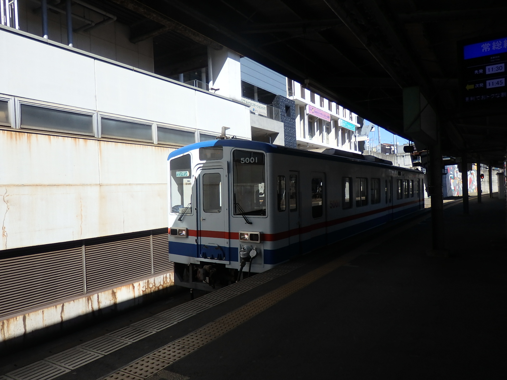
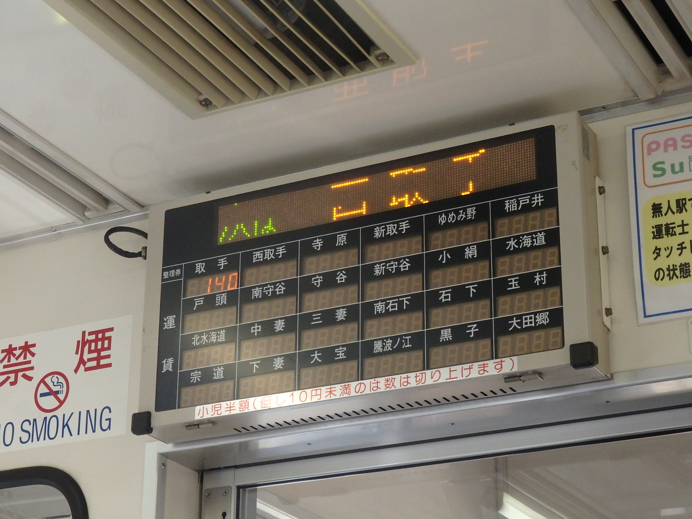
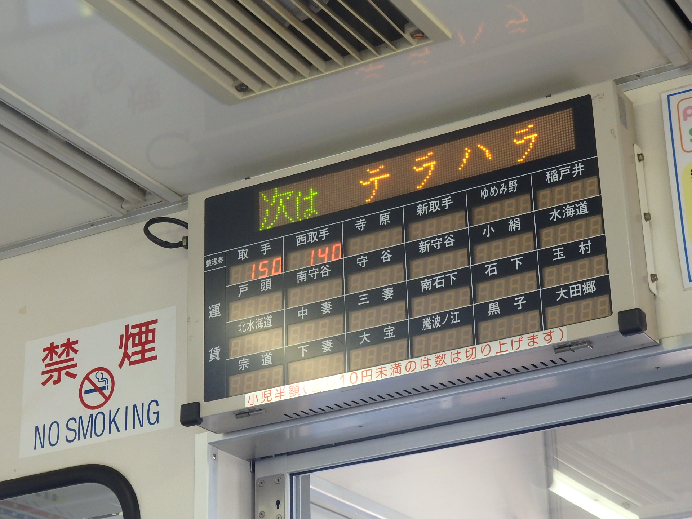
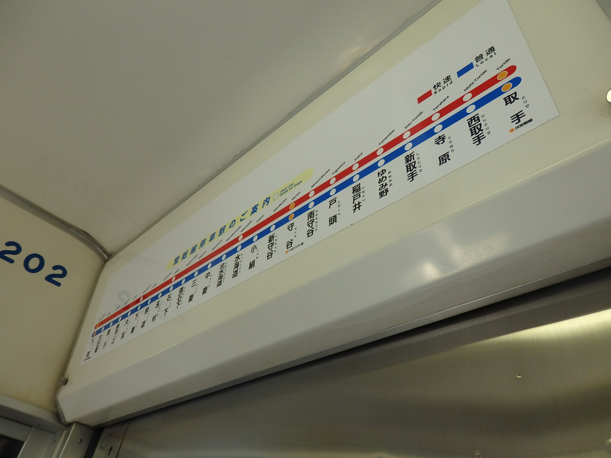

車両について
常総線では二両固定編成の車両と単行の車両が運用されています。
搭載されている運賃箱は水海道以南では都市型ワンマン運転が行われているため、料金の徴収には使用されず、案内にのみ使用されます。
単行車両は片側3ドアで、両端のドアが片開きで中央のドアが両開きという関東では特異なドア配置です。
二両固定編成は一両につき片側3ドアで、すべて両開きです。

単行車両
二両固定編成


露出160分の1秒で撮影した運賃箱の表示。
露出50分の1秒で撮影した運賃箱の表示。
写真からわかるように、運賃箱の表示を撮影する際には露出を50分の1秒にして撮影するのが最適なようです。

車内の路線図。読み仮名が振ってあり、ローマ字を読みにくい人にも優しい路線図になっている。
戻る